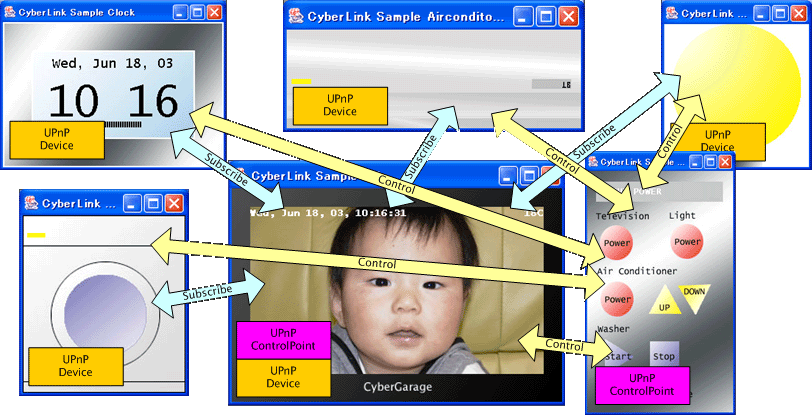

mUPnP for C is a development package for UPnP™ [^1] (Universal Plug and Play) developers. It provides a set of APIs to create UPnP™ devices and control points quickly and easily. This README provides an overview of the package and its contents, along with setup and usage instructions.
The UPnP™ architecture is designed to enable the discovery and control of networked devices and services, such as media servers and players, within a home network. UPnP™ is based on several standard protocols, including GENA, SSDP, SOAP, HTTPU, and HTTP. To create UPnP™ devices, you need to understand and implement these protocols.

mUPnP for C simplifies this process by handling these protocols automatically. It allows developers to focus on creating their devices and control points without worrying about the underlying protocol details.
mUPnP for C runs on Unix-like systems, macOS, iOS, and Windows. Since version 3.1.0, it also runs on ESP32 microcontrollers as an ESP-IDF component.
mUPnP for C is supported by IPA, INFORMATION-TECHNOLOGY PROMOTION AGENCY, JAPAN, as part of Mitoh Program 2004.
Building the Library and Samples
The following sections describe how to build or install the library and samples on each platform.
Unix
mUPnP for C is distributed as an Automake project. For a Git checkout, install Autoconf, Automake, and the Autoconf Archive macros before building:
Run ./bootstrap for the first Git build and after changes to build definitions or source/header file lists, then rerun ./configure. Ordinary edits to existing source files only need make. Prepared make dist release tarballs can start at ./configure; GitHub-generated source archives follow the Git checkout steps.
Homebrew (macOS, Linux)
On platforms that support Homebrew, install mUPnP with the following commands:
macOS
An Objective-C wrapper is available for Cocoa on macOS. The framework currently supports only basic control point functionality. Use the C library if you need the full functionality of mUPnP for C.
The bundled Xcode projects build with Xcode 27 and target macOS 12.0 or later and iOS 15.0 or later.
ESP32 (ESP-IDF)
The repository can be used directly as an ESP-IDF component with Espressif's managed Expat dependency. The port targets ESP32 with one active Wi-Fi station interface and IPv4; the build baseline is ESP-IDF v5.5.5 (>=5.5,<6.0).
To try the Wi-Fi control-point example:
To use mUPnP in your own application, place this repository at <project>/components/mupnp (for example, as a Git submodule pinned to the 3.1.4 tag), add REQUIRES mupnp to your component, and include <mupnp/upnp.h>.
Limited hardware testing of the control point on an ESP32 DevKitC-VE has been reported. Device hosting, other ESP32-family targets, IPv6, Ethernet, and long-duration operation have not been validated yet. See the ESP-IDF guide for required sdkconfig settings, notes on lifetime and memory, and a hardware validation checklist.
Windows
mUPnP includes Visual Studio 2005 projects for Windows in the mupnp/*/win32/vs2005 directories. No platform projects are provided for Windows CE, but a contributor has verified that the source code compiles successfully.
References
mUPnP for C
For information on developing UPnP devices or control point applications with mUPnP for C, see the following developer documentation:
mUPnP for Objective-C
mUPnP for C includes an Objective-C wrapper for iOS and macOS. For details, see the following developer documentation:
Examples
- UPnP control point examples
- UPnP controller for UPnP devices
- UPnP controller for standard UPnP devices
- Embedded control point
- UPnP device examples
- UPnP standard devices
- UPnP non-standard devices
Adoption and Usage
mUPnP for C (formerly CyberLink for C) has been used in the products and projects below. The [ChangeLog](ChangeLog) records the name change in 2015; these entries describe one continuous project's adoption history.
| Manufacturer / project | Product / project scope | Evidence |
|---|---|---|
| NEC Aterm | WG2600HP, WG2600HP2, WG2600HP3 | Official manuals |
| TCL | 50CF630K, 55CF630K (UK manual) | Official manual |
| iFFALCON | U75A / U85A series | Official manual |
| Zyxel | EX5601-T1, EX3600-T0, DX3300-T0 and related models; specified firmware | Official release notes |
| Audio Group Denmark | Aavik Stream app | Official licenses |
| Panasonic | Blu-ray Remote 2011 app | Official app page and EULA |
| llink (open source) | Media server, macOS build integration | Adopting project's README |
| Nokia | Media Streamer app for Nokia 770 | Project report and historical references |
| Panasonic | VIERA Remote for iOS | Project report |
| Toshiba / REGZA | Televisions reported by the project | Project report and user-provided photo |
Adoption evidence records source-reported component names and versions, verification dates, product and firmware limits, and supporting images. It distinguishes manufacturer disclosures, project reports and copyright-only notices. The list does not imply manufacturer endorsement or use throughout a manufacturer's range.
[^1]: UPnP™ is a certification mark of the UPnP™ Implementers Corporation.